计算机视觉 · 第 6 章 卷积神经网络
6.4 几种典型的卷积神经网络
前面三节讲的是卷积神经网络的「零件」，这一节看几台真正跑起来的机器。从 2012 年起，ILSVRC 图像识别竞赛把卷积神经网络推上了舞台，LeNet、AlexNet、ZFNet、VGG、GoogLeNet、ResNet 依次登场，每一代都在回答同一个问题：怎样把网络做得更深、更强，同时不让参数和计算量失控。最后再看一个实践环节——把网络每一层学到的特征图可视化出来。
1. 从 ILSVRC 说起
ImageNet 大规模视觉识别挑战赛（ILSVRC）是这段历史的坐标系。课件给出的这张图汇总了历年的冠军模型与它们的识别错误率：
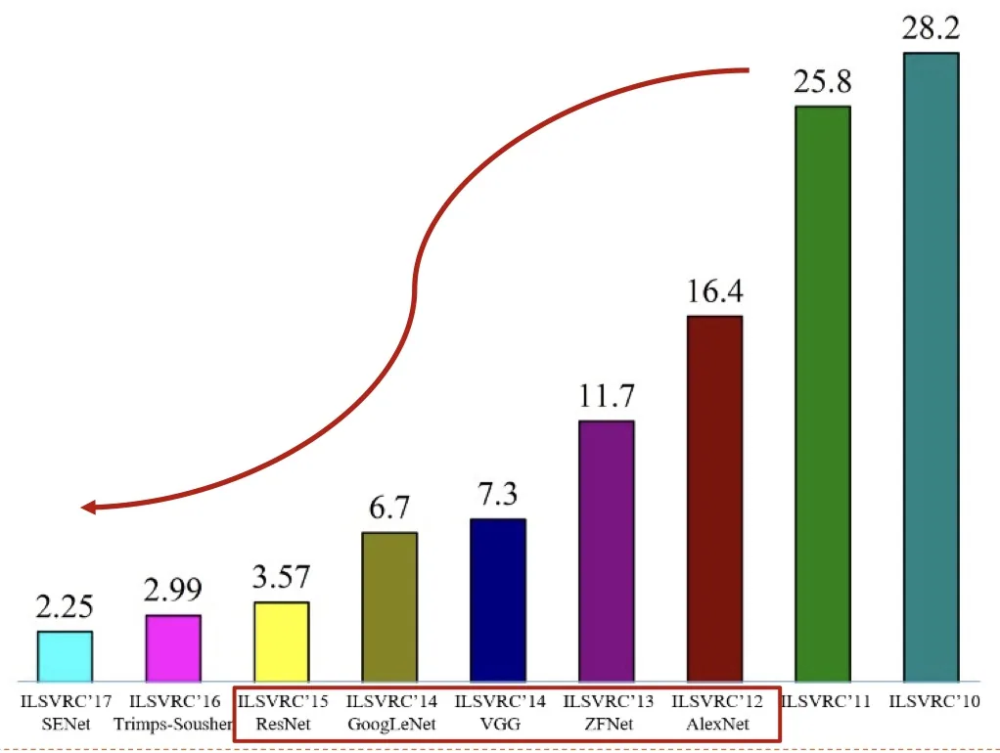
| 年份 | 模型 | 错误率 | 课件给出的要点 |
|---|---|---|---|
| 2010 / 2011 | — | 28.2% / 25.8% | 卷积神经网络登场之前的最好成绩 |
| 2012 | AlexNet | 16.4% | 第一个现代深度卷积网络，浅层与深度神经网络的分界线 |
| 2013 | ZFNet | 11.7% | 在 AlexNet 上改动很小，靠可视化指导调参 |
| 2014 | GoogLeNet / VGG | 6.7% / 7.3% | 冠军 GoogLeNet 更宽更省参数，亚军 VGG 更深 |
| 2015 | ResNet | 3.57% | 152 层，残差学习，CNN 图像史上的里程碑 |
| 2016 / 2017 | Trimps-Soushen / SENet | 2.99% / 2.25% | 错误率逼近 2%，已低于一般人类的水平 |
下面按登场顺序，把它们各自的「代表作」讲清楚。
2. LeNet：卷积神经网络的 Hello World
LeNet 是一系列网络的合称，包括 LeNet-1、LeNet-5 等，由 Yann LeCun 等人提出，被称为卷积神经网络的 Hello World。基于 LeNet-5（共 7 层）的手写数字识别系统在 90 年代被美国很多银行使用，用来识别支票上面的手写数字——这是卷积神经网络最早的大规模商业落地。
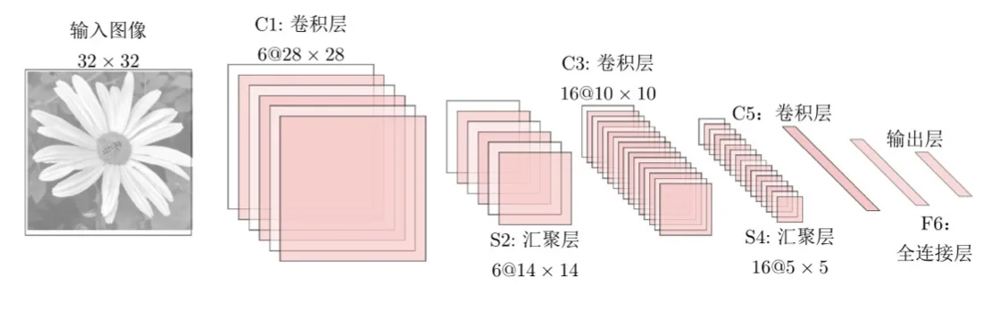
LeNet-5 的逐层配置是理解「卷积神经网络怎么堆」的第一份完整图纸，它一共 7 层（传统上不把输入层算作网络层次结构之一）：
| 层 | 配置 | 输出特征图 |
|---|---|---|
| 1. 输入层 | 归一化为 32 × 32 | 32 × 32 |
| 2. 卷积层 C1 | 5 × 5，步长 1，填充 0，6 个 | 28 × 28 × 6 |
| 3. 池化层 S2 | 2 × 2，步长 2，填充 0 | 14 × 14 × 6 |
| 4. 卷积层 C3 | 5 × 5，步长 1，填充 0，16 个 | 10 × 10 × 16 |
| 5. 池化层 S4 | 2 × 2，步长 2，填充 0 | 5 × 5 × 16 |
| 6. 卷积层 C5 | 5 × 5，步长 1，填充 0，120 个 | 1 × 1 × 120 |
| 7. 全连接层 F6 | 120 维向量 → 84 维向量 | 84 维向量 |
| 8. 输出层 | Softmax 得到 10 个类别的概率 | 10 维向量 |
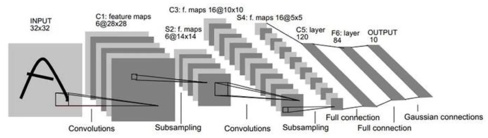
表里每一层的输入就是上一层的输出，所以从 32 × 32 一路读下来，正好能看清网络是怎样把一幅图像逐步压成 10 个类别概率的。而表里的每个尺寸都可以用 6.1 节的公式 ⌊(M − K + 2P) / S⌋ + 1 核对一遍：32 → 28（5 × 5 卷积），28 → 14（2 × 2、步长 2 池化），14 → 10（5 × 5 卷积），10 → 5（池化），5 → 1（5 × 5 卷积，正好把特征图卷成一个点）。卷积层负责提取特征，池化层负责把尺寸减半，最后两层全连接把特征变成 10 个数字的概率——这个套路此后二十年基本没变。
3. AlexNet：深度学习的引爆点
AlexNet 是 2012 年 ImageNet 图像识别竞赛的冠军算法。课件把它定义为第一个现代深度卷积网络模型，理由是它同时用上了几项后来成为标配的技术：用 GPU 进行并行训练、采用 ReLU 作为非线性激活函数、使用 Dropout 防止过拟合、使用数据增强等。
结构上它与 LeNet 相似，但用了更多的卷积层和更大的参数空间来拟合大规模数据集，包括 5 个卷积层、3 个汇聚层和 2 个全连接层。课件称它是浅层神经网络和深度神经网络的分界线。
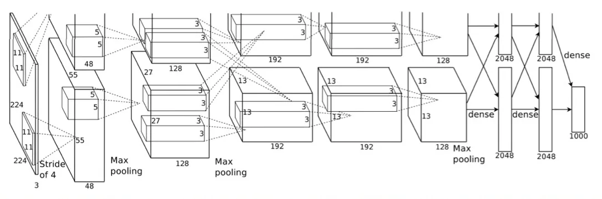
它的网络结构按顺序排开是：卷积层 1（Conv1）→ 最大池化层 1（Max-Pooling1）→ 卷积层 2（Conv2）→ 最大池化层 2（Max-Pooling2）→ 卷积层 3（Conv3）→ 卷积层 4（Conv4）→ 卷积层 5（Conv5）→ 最大池化层 3（Max-Pooling3）→ 全连接层 1（FC1）……
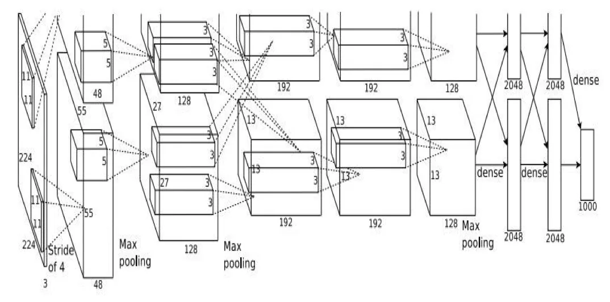
这里有一个值得留意的细节：卷积层 3、4、5 是连在一起的，中间没有池化层。回看 6.2 节最后讲的「卷积块」——连续 M 个卷积层加 b 个汇聚层（M 取 2 ∼ 5，b 取 0 或 1）——AlexNet 正是这个结构的早期实例。
4. ZFNet：用可视化指导调参
ZFNet 是 2013 年 ILSVRC 的冠军模型。它的网络结构在 AlexNet 上并没有做很大的改进，只是将第一层的卷积核大小从 11 × 11 改成了 7 × 7，并将步长由 4 改为了 2。真正的贡献在于方法：根据可视化结果判断模型效果，从而确定调参方向。
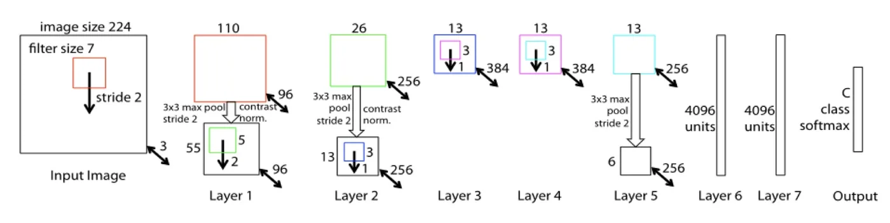
它可视化的正是卷积层提取出来的特征图像，做法与前面的层一一对应：每一层的前向基本操作是「卷积 → ReLU → 池化」，可视化的反向过程就是「反池化 → 反 ReLU → 反卷积」。把中间层的特征图还原回像素空间，就能看见这一层到底在响应什么样的图案——这也是理解卷积神经网络「黑箱」的第一条实用路径。
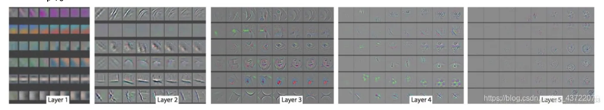
5. VGG：把网络做深
VGG 是 2014 年 ILSVRC 的亚军模型，由牛津大学的 Visual Geometry Group（VGG）提出。它探索了卷积神经网络的深度和性能之间的关系，构造了 16 ∼ 19 层深的卷积神经网络，证明网络的深度能够在一定程度上影响最终性能，使错误率大幅下降；同时它拓展性很强，在之后的应用中仍然常常被用来提取图像特征。
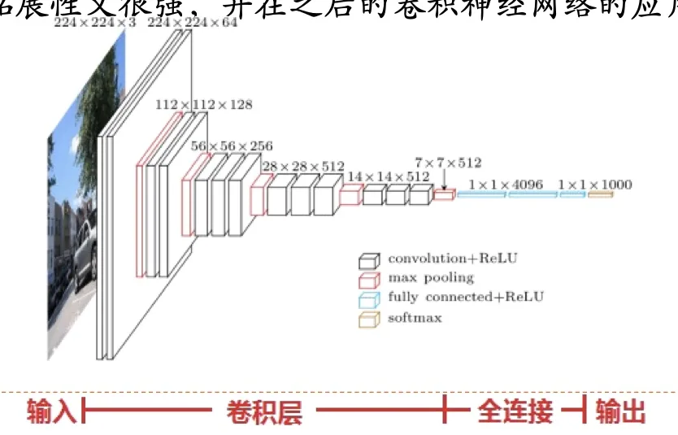
VGG 的基本原理是采用堆积的小卷积核替代大卷积核：用连续的几个 3 × 3 卷积核代替 AlexNet 中的较大卷积核（11 × 11、7 × 7、5 × 5）。这样做的好处是，多层非线性层可以增加网络的深度来保证学到更复杂的模式，而且代价还比较小——参数更少。具体的替换规则是：用 2 个 3 × 3 的卷积核级联起来代替 5 × 5 的卷积核，用 3 个 3 × 3 的卷积核级联起来代替 7 × 7 的卷积核。
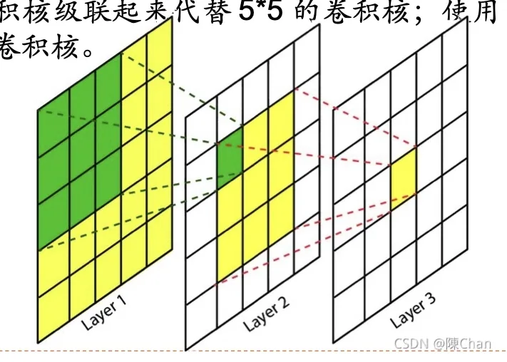
「参数更少」这句话是可以算出来的，这也解释了为什么这笔买卖划算：卷积核的感受野是它的边长，2 个 3 × 3 的感受野与 1 个 5 × 5 相同，但参数量是 2 × 9 = 18，而 5 × 5 需要 25 个参数；3 个 3 × 3 的感受野与 1 个 7 × 7 相同，参数量是 27 对 49。感受野一样大、参数更少、非线性层更多——三重收益。
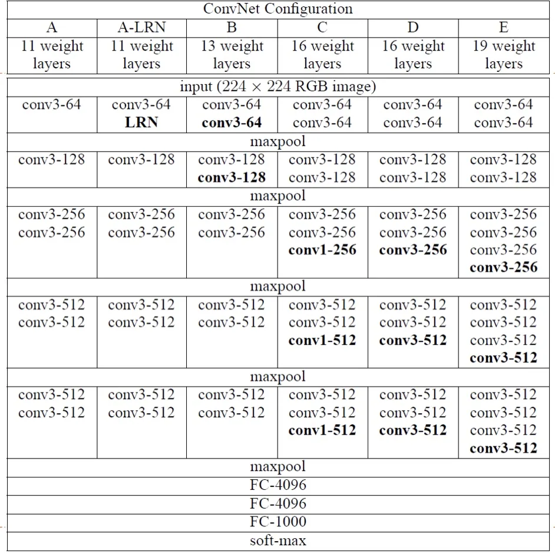
6. GoogLeNet 与 Inception：又深又省
GoogLeNet 是 2014 年 ILSVRC 的冠军模型，它的特点是网络更深、参数更少、性能却更加优越。要理解它，先要看它反对什么。
一般来说，提升网络性能最直接的办法就是增加网络的深度和宽度——深度指网络层数，宽度指神经元数量。但课件指出这种方式存在三个问题：
- 参数太多，如果训练数据有限，容易过拟合；
- 参数太多，计算复杂，难以应用；
- 网络越深，容易出现梯度消失问题，难以优化模型。
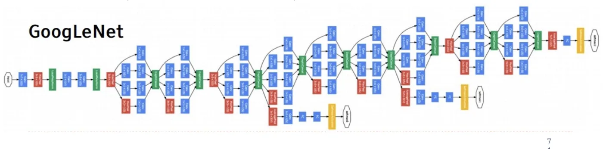
GoogLeNet 的思路是「增加网络深度和宽度的同时减少参数」，办法就是 Inception 模块。Inception 网络由多个 Inception 模块和少量汇聚层堆叠而成，模块本身经历了 V1、V2、V3、V4 等多个版本的迭代优化，GoogLeNet 使用的是 Inception 模块。
Inception-V1 的核心动作是：同时使用 1 × 1、3 × 3、5 × 5 等不同大小的卷积核，并把得到的特征映射在深度上拼接（堆叠）起来作为输出特征映射。这样同一个模块里既有「看得近」的小卷积核、也有「看得远」的大卷积核，实现多尺度特征提取——图像里的目标有大有小，与其赌一个尺度，不如一次都试。
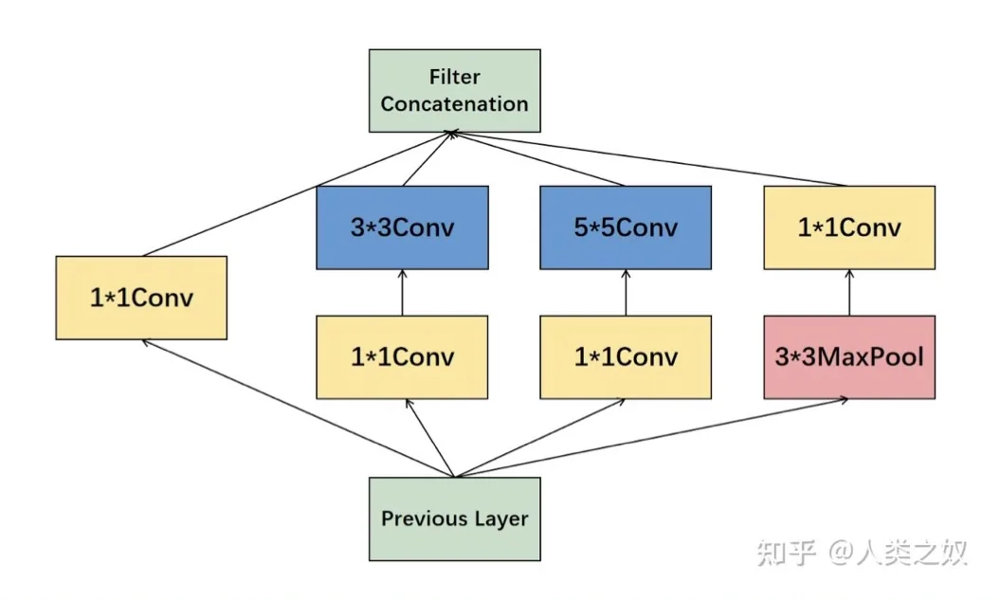
Inception-V3 则把 V1 中的大尺寸卷积核替换为多个小尺寸卷积核的堆叠，以此减少模型参数量、增加网络深度、提升模型拟合复杂分布的能力。具体包括两点：用两层 3 × 3 卷积替换 V1 中的 5 × 5 卷积（这与 VGG 的思路一致），以及用连续的 K × 1 和 1 × K 卷积替换 K × K 卷积——把一个二维大卷积核拆成一横一竖两个一维卷积核，感受野不变而参数进一步减少。此外，Inception-V3 还引入了批量归一化等优化方法来帮助训练，这一点在 6.5 节还会专门讲。
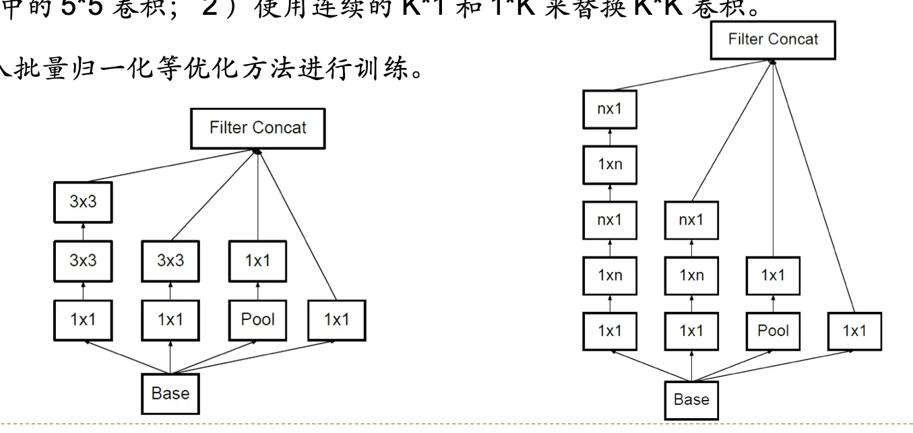
7. ResNet：用残差学习解决「越深越差」
ResNet 是 2015 年 ILSVRC 的冠军模型，共有 152 层。它是 CNN 图像史上的里程碑事件，作者何恺明也因此获得 CVPR 2016 最佳论文奖。
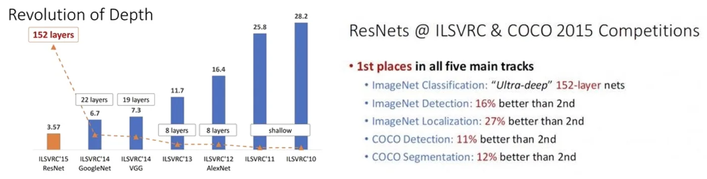
它要解决的是深度网络的退化问题：随着网络深度增加，网络的表现先是逐渐增加至饱和，然后迅速下降。注意下降的是训练误差，所以这不是过拟合，而是更深反而更难优化。课件给出了一个很漂亮的反证：如果存在某个 k 层的网络 f 是当前最优的网络，那么可以构造一个更深的网络，让它最后几层仅仅是 f 第 k 层输出的恒等映射，就能取得与 f 一致的结果；也许 k 还不是最佳参数，那么更深的网络还可以取得更好的结果。所以按照常理，深层网络不应该表现得更差。由此得到一个合理的猜测：恒等映射并不是那么好学的。
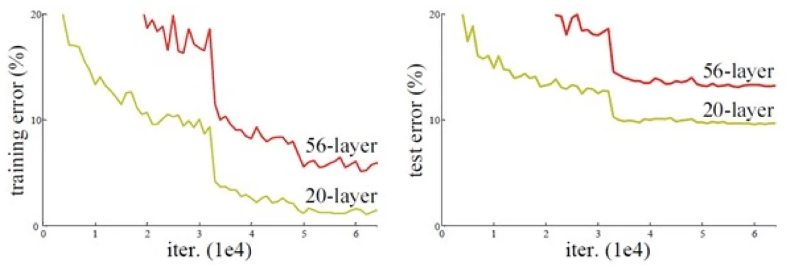
既然「直接学恒等映射」很难，那就换个目标去学。ResNet 的答案是残差学习：当输入为 X 时，网络原本要学的特征记为 H(X)，现在改成让它去学残差 F(X) = H(X) − X，而原始特征通过一条跳跃连接（skip connection）直接加到输出上，得到 F(X) + X。
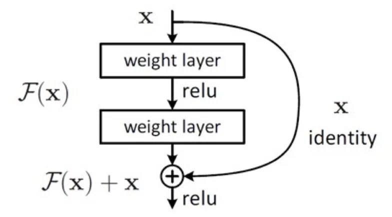
这样改动之后有两点好处，课件都写得很明白：
- 学习更容易：直观上看，学习残差比直接学习原始特征更加容易，因为残差一般会比较小，学习难度也小；跳跃连接也可以提高信息的传播效率。
- 缓解梯度消失：在反向传播过程中，梯度可以通过跳跃连接直接传递到前面的层，避免了梯度在多层传播中的衰减。
把普通网络与残差网络放在一起比较，效果一目了然：34 层的普通网络退化明显，而 34 层的残差网络不仅没有退化，还优于更浅的网络。
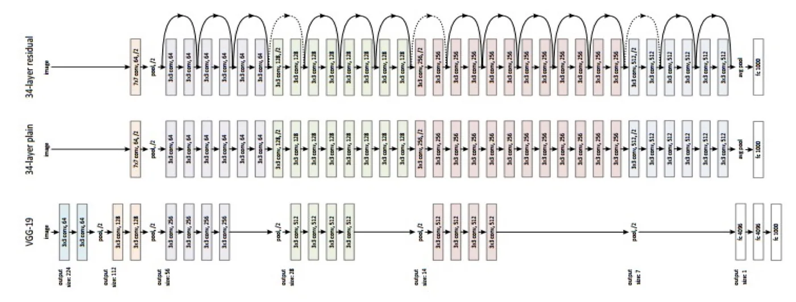
8. 把网络看进去：特征图可视化
最后一节是动手环节：展示如何可视化卷积神经网络每一层输出的特征图，选用的模型是 PyTorch 框架提供的 VGG16。网络的输入以一幅花为例，经过 VGG16 的第一层卷积层之后，就会有 64 个特征图——每一个特征图都是这一层某个卷积核「看到」的结果。
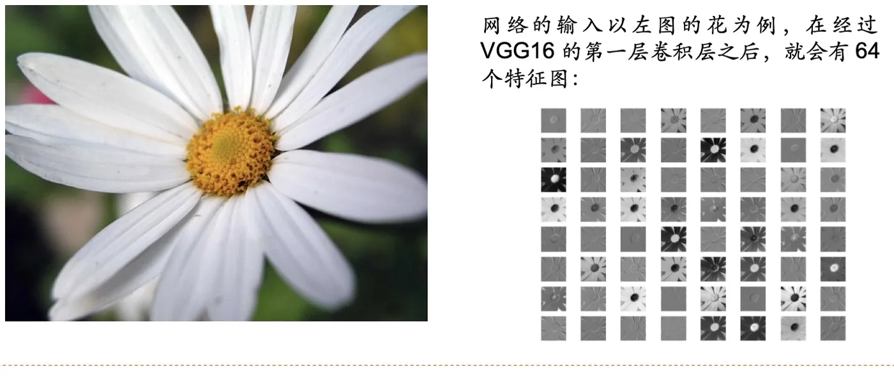
流程分四步。第一步是获取 VGG16 模型并初始化路径；第二步是预处理输入图片，使图像变成能被卷积神经网络接受的大小——课件用的是 transforms.Resize(256) 与 transforms.CenterCrop(224)，即先把短边缩放到 256、再从中心裁出 224 × 224，这正是 VGG16 要求的输入尺寸。
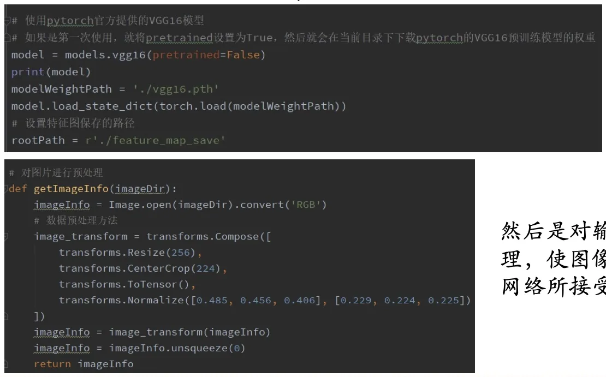
第三步要知道 VGG16 的整体结构，才能确定「第 k 层」指的是哪一层。课件打印了完整的 VGG 模型结构。
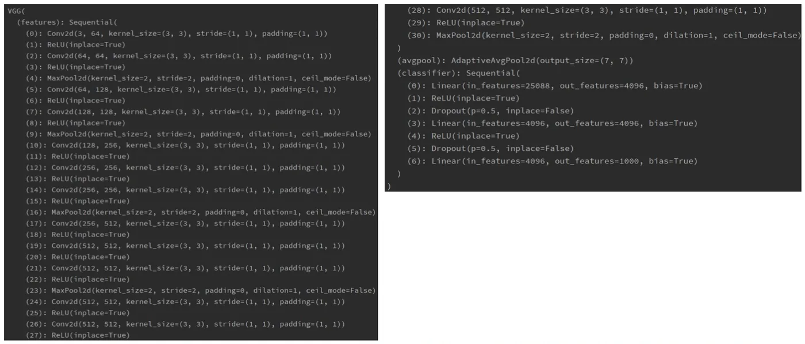
第四步是前向传播并截取中间层：把处理后的图片输入 VGG16，在传播过程中计算当前的网络层数，直到层数等于我们希望可视化的层数 k，这样就能拿到需要的特征图。拿到第 k 层的特征图之后还要遍历显示——因为每一层的特征图可能有多个（第一层就有 64 个），所以要把它们逐个取出来画成一张张小图。
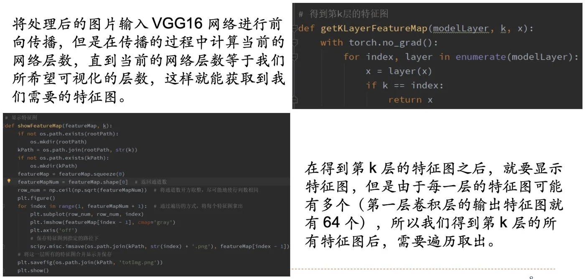
getKLayerFeatureMap() 按层数截取第 k 层的输出，showFeatureMap() 先取出通道数，再用 ⌈√通道数⌉ 决定子图的行列数逐个显示（原课件第 82 张）串起来就是：读入图片 → 预处理 → 送入网络逐层前向 → 在第 k 层截住 → 把该层的每个通道画成一张小图。图片路径和希望提取的层数 k 都可以自定义。
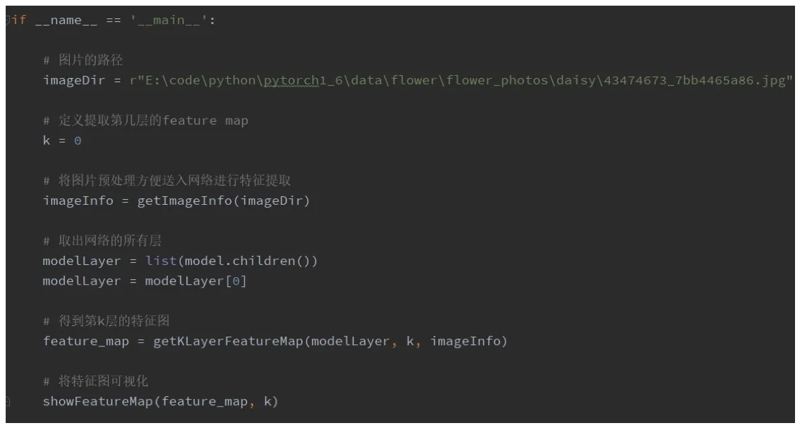
课件还给出了一个更省事的替代方案：LeNet-5 识别手写数字的可视化网站，可以直接在浏览器里看每一层的响应（原课件第 84 张）。
本节小结
- ILSVRC 是这段历史的坐标系：错误率从 2010 年的 28.2% 一路降到 2017 年的 2.25%，AlexNet（2012，16.4%）、ZFNet（2013，11.7%）、GoogLeNet 与 VGG（2014，6.7% / 7.3%）、ResNet（2015，3.57%）依次登场。
- LeNet-5 是卷积神经网络的 Hello World，共 7 层，90 年代用于识别银行支票上的手写数字；结构为「32 × 32 输入 → C1 卷积 → S2 池化 → C3 卷积 → S4 池化 → C5 卷积 → F6 全连接 → Softmax 输出」，每一级的尺寸都能用 ⌊(M − K + 2P) / S⌋ + 1 核对。
- AlexNet 是第一个现代深度卷积网络模型，用上了 GPU 并行训练、ReLU、Dropout、数据增强，包含 5 个卷积层、3 个汇聚层和 2 个全连接层，是浅层与深度神经网络的分界线。
- ZFNet 只把第一层卷积核从 11 × 11 改成 7 × 7、步长从 4 改成 2，它的贡献是「用可视化指导调参」：前向是卷积 → ReLU → 池化，可视化则走反池化 → 反 ReLU → 反卷积。
- VGG 构造了 16 ∼ 19 层的网络，证明深度能影响性能；基本原理是堆积小卷积核替代大卷积核——2 个 3 × 3 代替 5 × 5（参数 18 < 25），3 个 3 × 3 代替 7 × 7（参数 27 < 49），感受野相同而参数更少、非线性更多；常用 D 配置即 VGG16。
- GoogLeNet 用小模块换取「更深、参数更少」：Inception-V1 同时使用 1 × 1、3 × 3、5 × 5 卷积并在深度上拼接，实现多尺度特征提取；Inception-V3 用两层 3 × 3 替换 5 × 5、用 K × 1 与 1 × K 替换 K × K，并引入批量归一化。
- ResNet（152 层）针对深度网络的退化问题——更深的网络训练误差反而更高——提出残差学习：让网络学 F(X) = H(X) − X，并用跳跃连接把 X 直接加回去；这样残差更容易学，梯度也能经跳跃连接直传，缓解梯度消失。
- 特征图可视化用 PyTorch 的 VGG16 演示：预处理（Resize(256) + CenterCrop(224)）→ 逐层前向到第 k 层截住 → 遍历该层每个通道画成小图；第一层就有 64 个特征图。